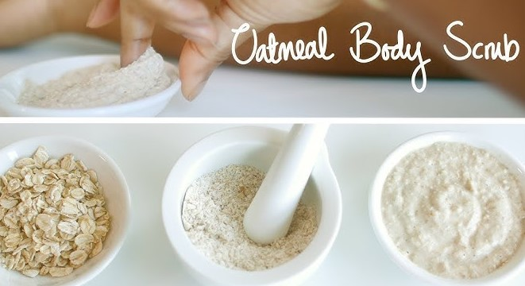

Oatmeal
Great for: Sensitive, dry, or mature skin
Why:
- Gentle enough for delicate skin; the fine particles help lightly buff away dead skin.
- Has soothing properties that can calm redness and irritation.
How to Use:
- Finely grind oats (colloidal oatmeal).
- Mix with a bit of lukewarm water, yogurt, or honey to form a paste.
- Massage onto damp skin with light, circular motions, then rinse.